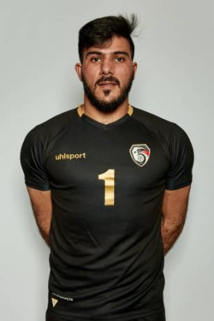
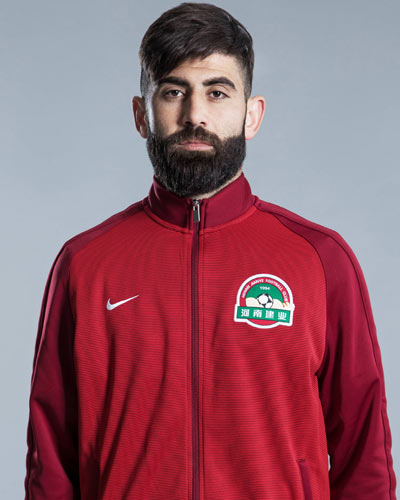
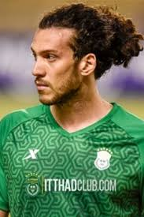
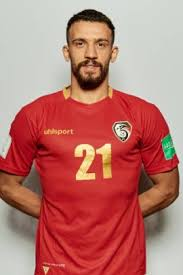
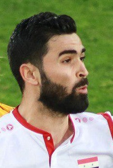

| Ibrahim Alma |
Portero |
34 |
Ibrahim Alma (Homs, 18 de octubre de 1990) es portero sirio que juega en el Al-Wahda. |
 |
| Ahmad Al-Salih |
Defensa central |
34 |
Ahmad Al-Salih (Homs, 20 de mayo de 1990) es defensa sirio que juega en el Hutteen SC. |
 |
| Omar Midani |
Defensa |
30 |
Omar Midani (Damasco, 26 de enero de 1994) es defensa sirio que juega en el Al-Ittihad Aleppo. |
 |
| Mohammad Al-Marmour |
Mediocampista |
29 |
Mohammad Al-Marmour (Tartus, 4 de enero de 1996) es mediocampista sirio que juega en el Al-Ittihad Aleppo. |
 |
| Omar Al Somah |
Delantero |
36 |
Omar Al Somah (Deir ez-Zor, 28 de marzo de 1989) es delantero sirio que juega en el Al-Arabi SC. |
|
| Omar Khribin |
Delantero |
31 |
Omar Khribin (Damasco, 15 de enero de 1994) es delantero sirio que juega en el Al-Wahda. |
 |